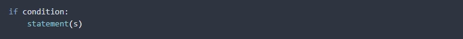
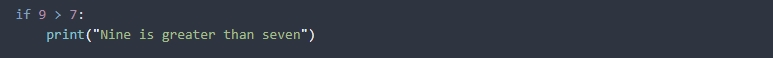
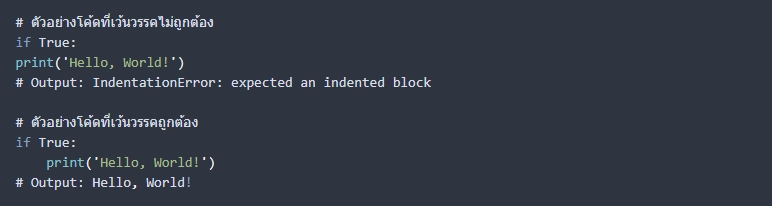
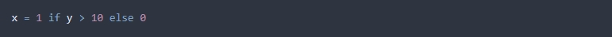
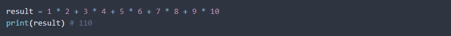
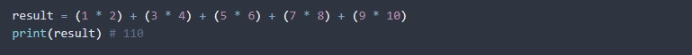

เว็บไซต์แหล่งความรู้เกี่ยวกับเทคโนโลยีและการเขียนโปรแกรม
Python มีลักษณะเป็นภาษาโปรแกรมที่มีรูปแบบการเขียนโค้ดที่เป็นมาตรฐาน ทำให้ผู้ใช้งานสามารถเข้าใจได้ง่าย และยังช่วยลดการเกิดข้อผิดพลาดที่อาจจะเกิดขึ้นได้เช่นกัน โดยในภาษา Python จะใช้ whitespace (ช่องว่างหรือ tab) เป็นตัวกำหนดขอบเขตของโค้ดแทนเครื่องหมายปีกกา {} ที่ใช้ในภาษาโปรแกรมอื่น นอกจากนี้ภาษา Python ยังมีเครื่องหมายพิเศษบางอย่างเช่น : (colon), . (dot), () (parentheses), [] (square brackets), {} (curly brackets) ซึ่งจะช่วยให้โค้ดเข้าใจและอ่านได้ง่าย อีกทั้งยังมีบทบาทสำคัญในการกำหนดโครงสร้างของโค้ดด้วย
การเว้นวรรค (indentation) เป็นสิ่งที่สำคัญและมีความหมายอย่างมากในการเขียนโค้ด เพราะว่าการเว้นวรรคจะบอก Python ว่าบล็อกของโค้ดเริ่มต้นจากที่ไหน และสิ้นสุดที่ไหน โดยภาษา Python จะไม่ใช้เครื่องหมายปีกกา ({}) หรือคีย์เวิร์ดเปิด-ปิด (begin-end) ในการกำหนดบล็อกโค้ด แต่จะใช้การเว้นวรรคเพื่อบอกให้ Python รู้ว่าโค้ดนั้นอยู่ในบล็อกเดียวกัน เว้นวรรคจะต้องเป็นความเท่ากันในบรรทัดเดียวกันของโค้ดในบล็อกเดียวกัน โดยปกติการเว้นวรรคจะใช้ที่เท่ากับ 4 ช่องว่าง (4 spaces) หรือ 1 แท็บ (tab) แต่ไม่ควรใช้รวมกันในบรรทัดเดียวกัน
ไวยากรณ์ (Syntax) ของภาษา Python มีลักษณะที่เป็นโครงสร้างแบบบล็อก (block structure) โดยโค้ดจะถูกกำหนดความสำคัญโดยการเว้นวรรค (indentation) ซึ่งทำให้โค้ดเป็นไปอย่างสม่ำเสมอ และง่ายต่อการอ่านและเข้าใจโค้ด นอกจากนี้ยังมีฟีเจอร์การเขียนโค้ดแบบพ้อยเตอร์ (punctuation-free) ที่ช่วยให้โค้ดของ Python มีความสั้นและอ่านง่ายกว่าภาษาอื่น ๆ ที่มีเครื่องหมายมากกว่า Python
นอกจากนี้ โครงสร้างของภาษา Python ยังใช้คำสั่งควบคุมเหมือนกับภาษาอื่น ๆ เช่น คำสั่ง if, else, for, while เป็นต้น โดยใช้สัญลักษณ์ของภาษาซึ่งถูกออกแบบมาเพื่อให้เข้าใจง่ายและใช้งานได้สะดวก โครงสร้างแบบนี้ทำให้โค้ด Python อ่านและเข้าใจได้ง่าย และช่วยลดโอกาสในการเขียนโค้ดที่ผิดพลาดอย่างมากโดยเฉพาะเมื่อเทียบกับภาษาที่มีโครงสร้างที่ซับซ้อนมากขึ้น เช่น C หรือ C++


ในตัวอย่างข้างต้น การเว้นวรรคที่อยู่หน้าบรรทัดที่ 2 บอก Python ว่าบล็อกของคำสั่ง if เริ่มต้นจากนั้น และคำสั่ง print อยู่ในบล็อกของ if นั้น โดยถ้าไม่มีการเว้นวรรคหน้าบรรทัดที่ 2 จะทำให้ Python ไม่รู้ว่าคำสั่ง print อยู่ในบล็อกของ if และจะเกิด Error ขึ้นในการแปลงโค้ด
ในภาษา Python มีการกำหนดลักษณะการเว้นวรรค (indentation) ที่สำคัญกับไวยากรณ์ (syntax) ของโค้ด Python โดยการเว้นวรรคจะใช้เพื่อระบุบล็อกโค้ด โดยการเว้นวรรคจะต้องเป็นแบบเดียวกันภายในบล็อกโค้ดเดียวกัน ถ้าไม่เป็นแบบเดียวกันจะทำให้เกิด SyntaxError หรือการรันโค้ดไม่ได้ ตัวอย่างเช่น

จากตัวอย่างข้างต้น การเว้นวรรคถูกต้องในบล็อก if ทำให้โค้ดสามารถรันได้ แต่ถ้าเว้นวรรคไม่ถูกต้องอย่างในบล็อก if จะทำให้เกิด SyntaxError และไม่สามารถรันโค้ดได้
การเขียนโค้ดในภาษา Python มีเทคนิคและรูปแบบการเขียนไวยากรณ์ที่ช่วยให้โค้ดอ่านง่าย และเข้าใจได้ง่ายมากขึ้น โดยเทคนิคการเขียนที่นิยมกันมีดังนี้
1.การใช้ชื่อตัวแปรที่อ่านง่าย
ใช้ชื่อตัวแปรที่อ่านง่ายและบอกความหมายได้ชัดเจน เช่น ถ้าต้องการเก็บชื่อผู้ใช้งานในระบบ ให้ใช้ชื่อตัวแปร “username” แทนที่จะใช้ “u” หรือ “usr” เป็นต้น
2.การจัดรูปแบบโค้ด (Code Formatting)
การจัดรูปแบบโค้ดสามารถช่วยให้โค้ดดูสะอาด และอ่านง่ายขึ้น
3.ใช้คำสั่งเงื่อนไขแบบตรรกะ (Ternary conditional operator)
เป็นวิธีการเขียนเงื่อนไขใน Python ที่ช่วยให้โค้ดดูสั้นและกระชับกว่าการใช้คำสั่ง if/else ซึ่งมักจะใช้เมื่อต้องการสร้างตัวแปรที่มีค่าขึ้นอยู่กับเงื่อนไขที่กำหนด
ตัวอย่างเช่น สมมติว่าต้องการตั้งค่าตัวแปร x เท่ากับ 1 ถ้าตัวแปร y มีค่ามากกว่า 10 และมีค่าเท่ากับ 0 ถ้า y มีค่าน้อยกว่าหรือเท่ากับ 10 สามารถเขียนได้ดังนี้

4.ใช้กฎความสัมพันธ์ของตัวดำเนินการ (Operator precedence)
เป็นเทคนิคที่ใช้ในการกำหนดลำดับความสำคัญของตัวดำเนินการต่างๆ ในภาษา Python โดยจะใช้ในกรณีที่มีการใช้งานหลายตัวดำเนินการในแต่ละบรรทัด หรือในกรณีที่ต้องการกำหนดลำดับของการประมวลผลเพื่อให้ได้ผลลัพธ์ที่ถูกต้องตามต้องการ
ตัวอย่างเช่น ในการคำนวณผลรวมของเลข 1 ถึง 10 โดยใช้การคูณและการบวก เราสามารถใช้กฎความสัมพันธ์ของตัวดำเนินการในการกำหนดลำดับของการประมวลผลได้ ดังนี้

ในตัวอย่างข้างต้น ตัวดำเนินการการคูณมีลำดับความสำคัญสูงกว่าตัวดำเนินการการบวก ดังนั้น Python จะทำการคูณเลขก่อน แล้วจึงทำการบวกเลข ตามลำดับของตัวดำเนินการ แต่ในกรณีที่ต้องการกำหนดลำดับของการประมวลผลให้ต่างจากลำดับความสำคัญที่กำหนดไว้ตามค่าคงที่ ใน Python เราสามารถใช้วงเล็บ () เพื่อกำหนดลำดับการทำงานได้ ดังตัวอย่างต่อไปนี้
